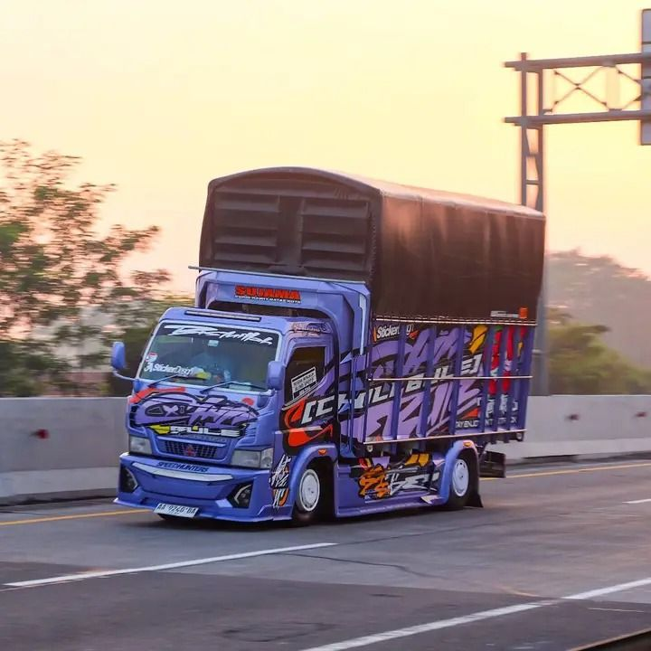
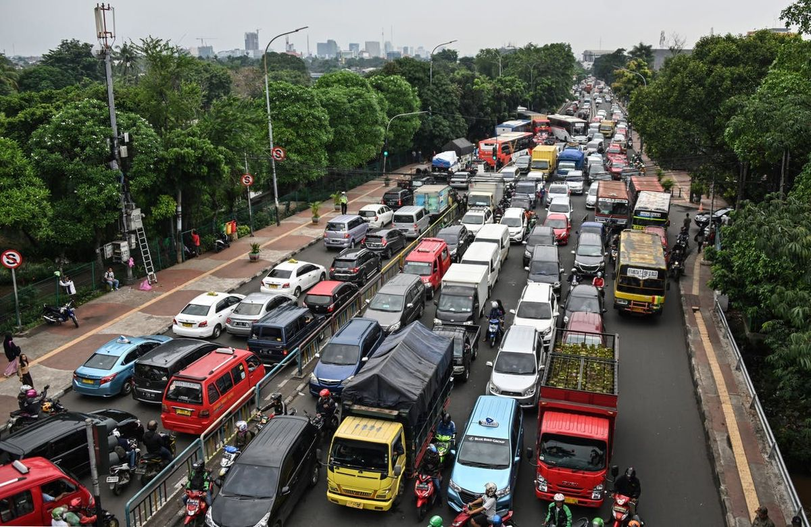

Platform monitoring Over Dimension Over Load (ODOL) real-time menggunakan teknologi sensor dan visi komputer untuk menjamin keselamatan dan efisiensi infrastruktur jalan raya.
Truk Over Dimension Over Load (ODOL) bukan sekadar pelanggaran administratif, melainkan ancaman nyata bagi keselamatan publik dan efisiensi logistik nasional.
Kendaraan kelebihan muatan secara drastis memperpendek umur aspal dan struktur jembatan. Pengawasan mencegah kerugian negara triliunan rupiah untuk perbaikan dini.
Truk ODOL memiliki jarak pengereman yang jauh lebih panjang, manuver buruk, dan blind spot lebih besar, menjadi penyebab utama kecelakaan fatal di jalan tol.
Mesin bekerja melebihi kapasitas desainnya, menyebabkan konsumsi bahan bakar yang tidak efisien dan emisi gas buang beracun yang merusak kualitas udara.
Pemantauan gerbang tol utama dengan sistem AI cerdas.

Tabel log riwayat pengukuran kendaraan secara *real-time*.
| Waktu Deteksi | ID / Plat Nomor | Jenis Kendaraan | Total Berat (Ton) | Dimensi (P x L x T) | Status |
|---|